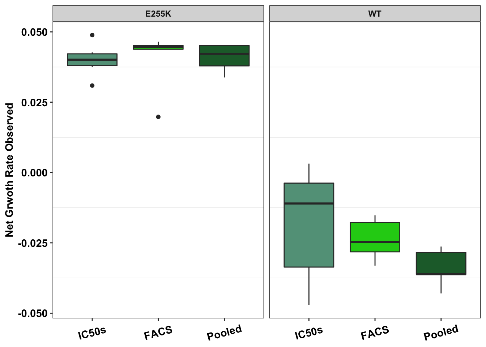
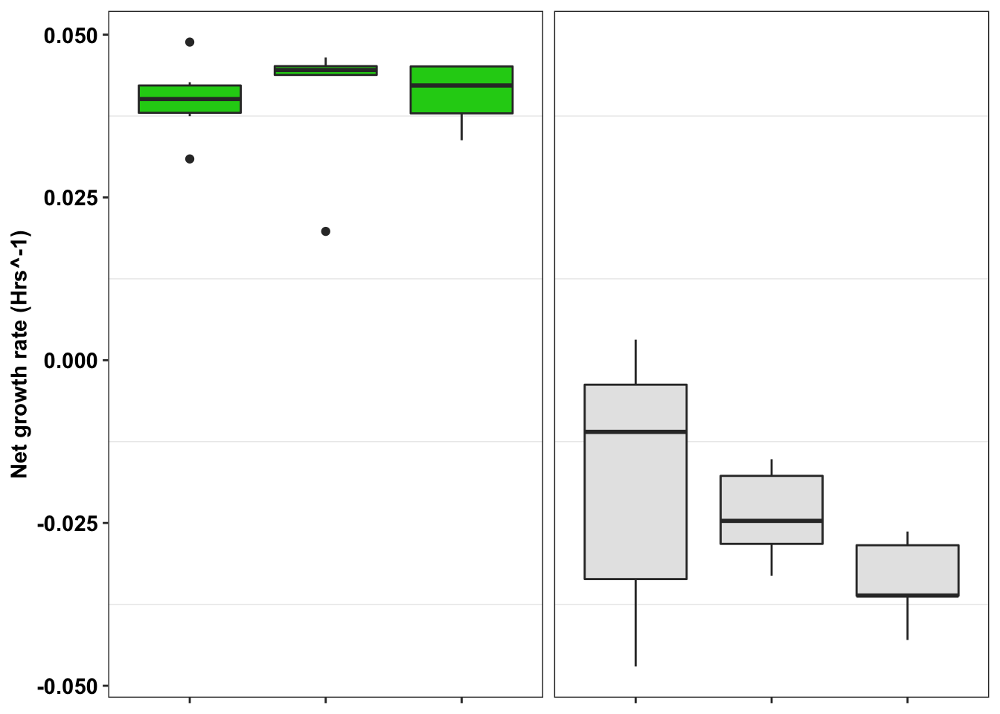
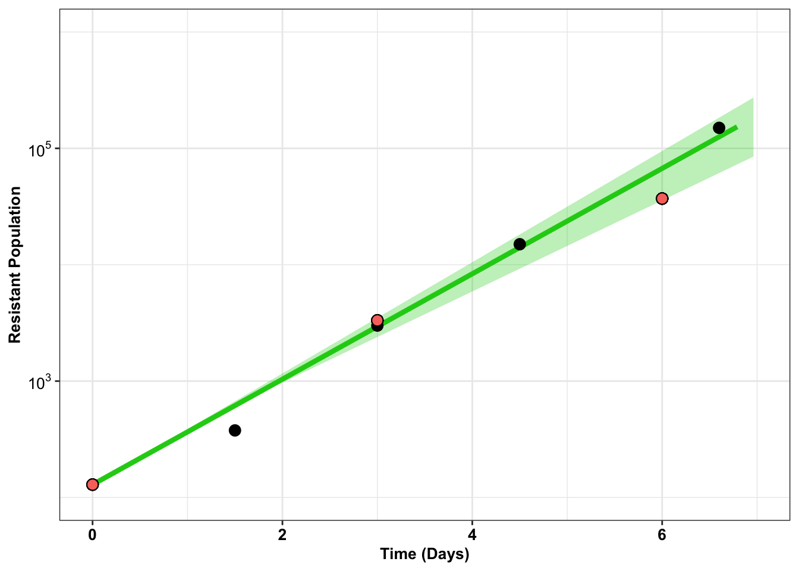
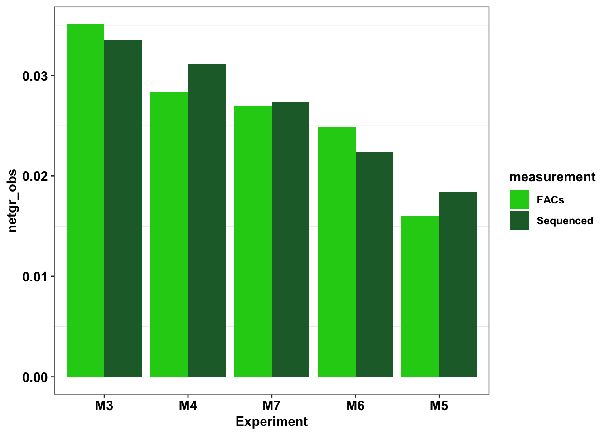
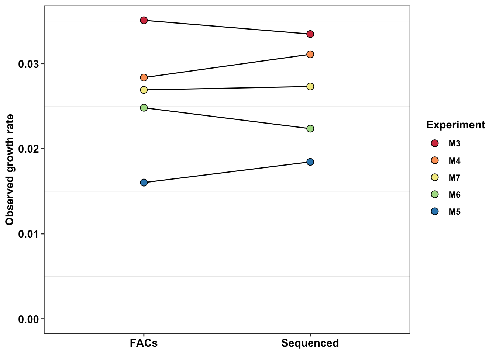

Last updated: 2025-06-23
Checks: 6 1
Knit directory: abl_dms/
This reproducible R Markdown analysis was created with workflowr (version 1.6.2). The Checks tab describes the reproducibility checks that were applied when the results were created. The Past versions tab lists the development history.
The R Markdown is untracked by Git. To know which version of the R
Markdown file created these results, you’ll want to first commit it to
the Git repo. If you’re still working on the analysis, you can ignore
this warning. When you’re finished, you can run
wflow_publish to commit the R Markdown file and build the
HTML.
Great job! The global environment was empty. Objects defined in the global environment can affect the analysis in your R Markdown file in unknown ways. For reproduciblity it’s best to always run the code in an empty environment.
The command set.seed(20250621) was run prior to running
the code in the R Markdown file. Setting a seed ensures that any results
that rely on randomness, e.g. subsampling or permutations, are
reproducible.
Great job! Recording the operating system, R version, and package versions is critical for reproducibility.
Nice! There were no cached chunks for this analysis, so you can be confident that you successfully produced the results during this run.
Great job! Using relative paths to the files within your workflowr project makes it easier to run your code on other machines.
Great! You are using Git for version control. Tracking code development and connecting the code version to the results is critical for reproducibility.
The results in this page were generated with repository version 253724b. See the Past versions tab to see a history of the changes made to the R Markdown and HTML files.
Note that you need to be careful to ensure that all relevant files for
the analysis have been committed to Git prior to generating the results
(you can use wflow_publish or
wflow_git_commit). workflowr only checks the R Markdown
file, but you know if there are other scripts or data files that it
depends on. Below is the status of the Git repository when the results
were generated:
Ignored files:
Ignored: .DS_Store
Ignored: .Rproj.user/
Ignored: analysis/.Rhistory
Ignored: data/.DS_Store
Ignored: output/.DS_Store
Untracked files:
Untracked: analysis/Homepage_Spike_In_Mutants.Rmd
Untracked: analysis/dose_response_curve_fitting_with_errorbars.Rmd
Untracked: analysis/enrichment_simulations.Rmd
Untracked: analysis/spikeins_data_parser.Rmd
Untracked: analysis/spikeins_depthofcoverages.Rmd
Untracked: analysis/spikeins_e255k_gfp.Rmd
Untracked: analysis/spikeins_growthrates.Rmd
Untracked: data/Twinstrand/
Untracked: data/gfpenrichmentdata.csv
Untracked: data/ic50data/
Untracked: dosing_normalization_stdevs_paired.pdf
Untracked: output/Enrichmentsimulations/
Untracked: output/spikeins_figures/
Untracked: output/twinstrand_maf_merge.csv
Untracked: output/twinstrand_simple_melt_merge.csv
Unstaged changes:
Modified: analysis/index.Rmd
Note that any generated files, e.g. HTML, png, CSS, etc., are not included in this status report because it is ok for generated content to have uncommitted changes.
There are no past versions. Publish this analysis with
wflow_publish() to start tracking its development.
# rm(list=ls())
library("lmtest")Loading required package: zoo
Attaching package: 'zoo'The following objects are masked from 'package:base':
as.Date, as.Date.numericlibrary("ggplot2")Warning: package 'ggplot2' was built under R version 4.0.2library("MASS")Warning: package 'MASS' was built under R version 4.0.5library("fitdistrplus")Loading required package: survivalLoading required package: npsurvLoading required package: lseilibrary("lme4")Loading required package: Matrixlibrary("boot")
Attaching package: 'boot'The following object is masked from 'package:survival':
amllibrary("dplyr")Warning: package 'dplyr' was built under R version 4.0.2
Attaching package: 'dplyr'The following object is masked from 'package:MASS':
selectThe following objects are masked from 'package:stats':
filter, lagThe following objects are masked from 'package:base':
intersect, setdiff, setequal, unionlibrary("plotly")
Attaching package: 'plotly'The following object is masked from 'package:MASS':
selectThe following object is masked from 'package:ggplot2':
last_plotThe following object is masked from 'package:stats':
filterThe following object is masked from 'package:graphics':
layoutlibrary("reshape2")
library(RColorBrewer)
conc_for_predictions=0.8
net_gr_wodrug=0.05
# twinstrand_simple_melt_merge=read.csv("../output/twinstrand_simple_melt_merge.csv",header = T,stringsAsFactors = F)
twinstrand_simple_melt_merge=read.csv("data/twinstrand/twinstrand_simple_melt_merge.csv",header = T,stringsAsFactors = F)
# twinstrand_maf_merge=read.csv("../output/twinstrand_maf_merge.csv",header = T,stringsAsFactors = F)
twinstrand_maf_merge=read.csv("data/twinstrand/twinstrand_maf_merge.csv",header = T,stringsAsFactors = F)
# ic50data_long=read.csv("../output/ic50data_all_conc.csv",header = T,stringsAsFactors = F)
ic50data_long=read.csv("data/ic50data/ic50data_all_conc.csv",header = T,stringsAsFactors = F)
ic50data_long$netgr_pred=net_gr_wodrug-ic50data_long$drug_effect
# gfpdata=read.table("../data/gfpenrichmentdata.csv",stringsAsFactors = F,header = T,sep=',')
gfpdata=read.table("data/gfpenrichmentdata.csv",stringsAsFactors = F,header = T,sep=',')
# ic50_heatmap=read.csv("../data/IC50HeatMap.csv",header = T,stringsAsFactors = F)
ic50_heatmap=read.csv("data/ic50data/IC50HeatMap.csv",header = T,stringsAsFactors = F)
cleanup=theme_bw() +
theme(plot.title = element_text(hjust=.5),
panel.grid.major = element_blank(),
panel.grid.major.y = element_blank(),
panel.background = element_blank(),
# axis.line = element_line(color = "black"),
axis.text = element_text(face="bold",color="black",size="11"),
text=element_text(size=11,face="bold"),
axis.title=element_text(face="bold",size="11"))This boxplot will compare the net growth rates of E255K observed across IC50s, FACs studies, and pooled studies
###########Netgr from pooled approach###########
pooled_data=twinstrand_simple_melt_merge%>%filter(mutant=="E255K",!netgr_obs%in%NA,duration%in%c("d0d3","d0d6"))%>%dplyr::select(mutant,experiment,netgr=netgr_obs,Spike_in_freq)%>%mutate(measurement="Pooled")
##Adding Wt growth rates
#These decay rates were taken from wildtype_growthrates_sequenced.csv. These growthrates are generated on a per-residue basis by subtracting the sum of the altDepths from the Depth at that residue. For example, if residue T315 had a depth of 20,000 reads, and 5,000 of those reads were non-parental, then we would assume that there are 15,000 Wt reads. These calculations are also present in the "nonlinear_growth_analysis.rmd" code.
# M3 -0.03618460529
# M4 -0.02631366224
# M5 -0.02841704794
# M6 -0.04296255129
# M7 -0.03614349619
pooled_data=pooled_data%>%dplyr::select(mutant,measurement,netgr)
pooled_data=rbind(pooled_data,
c("WT","Pooled","-0.03618460529"),
c("WT","Pooled","-0.02631366224"),
c("WT","Pooled","-0.02841704794"),
c("WT","Pooled","-0.04296255129"),
c("WT","Pooled","-0.03614349619"))
#####The above E255K numbers are E255K sequenced in the experiments. The numbers below are pooled FACs numbers from the same experiments.
# Uncomment the lines below to include pooled_facs data in the plots below
# pooled_data=rbind(pooled_data,
# c("E255K","Pooled_FACs","0.047882979"),
# c("E255K","Pooled_FACs","0.042670484"),
# c("E255K","Pooled_FACs","0.034028176"),
# c("E255K","Pooled_FACs","0.040478601"),
# c("E255K","Pooled_FACs","0.036180156"))
pooled_data$netgr=as.numeric(pooled_data$netgr)
#Why does the GFP FACs data seem to have the same growth rates?
###########Netgr from IC50s###########
####E255K and WT#####
ic50_data=ic50_heatmap%>%filter(species%in%c("E255K","WT"))%>%dplyr::select(mutant=species,y=X1.25)
ic50_data=ic50_data%>%mutate(alpha=-log(y)/72)
ic50_data=ic50_data%>%mutate(netgr=net_gr_wodrug-alpha,measurement="IC50s")
ic50_data=ic50_data%>%dplyr::select(mutant,measurement,netgr)
###########Netgr from FACs experiment###########
#This data originally sits in the FACs entries in the "Mixing Experiment 4, 8/20/18, directory in the Spike-ins for duplex sequencing project on benchling"
#These are for both 1:1000 and 1:100 data. Growth rates looked similar at low frequencies with and without WT effects but there was a slowering of growth without WT spike-ins. We haven't focused on that here though
####E255k#####
facs_data=data.frame(c(0.046483696,0.0450497374,0.0197837978,0.0437170827,0.04520188,0.0440885505))
colnames(facs_data)="netgr"
facs_data=facs_data%>%mutate(mutant="E255K",Spike_in_freq=c(1000,1000,1000,10000,10000,10000),experiment=c(),measurement="FACS")
####WT#####
wt_facs_data=data.frame(c(-0.0152053893,-0.0159955607,-0.0330918372,-0.0230634613,-0.0262883706,-0.0288481251))
colnames(wt_facs_data)="netgr"
wt_facs_data=wt_facs_data%>%mutate(mutant="WT",Spike_in_freq=c(1000,1000,1000,10000,10000,10000),experiment=c(),measurement="FACS")
facs_data=rbind(facs_data,wt_facs_data)
facs_data=facs_data%>%dplyr::select(mutant,measurement,netgr)
###########Plotting###########
###Please note that 625nM imatinib was used in all conditions
e255k_gr=rbind(facs_data,pooled_data,ic50_data)
e255k_gr$measurement=factor(e255k_gr$measurement,levels=c("IC50s","FACS","Pooled"))
###Showing net growth rate###
ggplot(e255k_gr,aes(x=factor(measurement),y=netgr,fill=measurement))+
geom_boxplot()+
facet_wrap(~mutant)+
scale_fill_manual(values = c("#63A088","#1CCE16","#206A36"))+
scale_y_continuous(name="Net Grwoth Rate Observed")+
cleanup+
theme(legend.position = "none",
axis.text.x=element_text(angle=15,hjust=.5,vjust=.5),
axis.title.x=element_blank())
ggplot(e255k_gr,aes(x=factor(measurement),y=netgr,fill=mutant))+
geom_boxplot()+
facet_wrap(~mutant)+
scale_fill_manual(values = c("#1CCE16","gray90"))+
scale_y_continuous(name="Net growth rate (Hrs^-1)")+
cleanup+
theme(legend.position = "none",
axis.text.x=element_text(angle=15,hjust=.5,vjust=.5),
axis.title.x=element_blank(),
strip.text = element_blank(),
axis.text.x.bottom=element_blank())
# ggsave("output/spikeins_figures/e255k_wt_alphas_figure.pdf",width = 4,height = 2.5,units="in",useDingbats=F)gfpdata$ttotal_sequenced=c(0,3,6)
gfpdata$xtotal_sequenced=c(129,3323,37023)
# gfpdata_simple=gfpdata%>%dplyr::select(ttotal_4,xtotal_4_e255k)
# e255k=twinstrand_maf_merge%>%filter(mutant=="E255K",experiment=="M3")
ggplot(gfpdata)+
geom_line(aes(x=t_out_4,y=x_out_4_e255k),color="#1cce16",size=1.5)+
geom_ribbon(aes(x =t_out_4_conintub,ymax=x_out_4_e255k_ciub,ymin=x_out_4_e255k_cilb),fill="#1cce16",alpha=.3)+
# geom_line(aes(x=t_out_3,y=log10(x_out_3_e255k)),color="#206A36",size=1.5)+
# geom_ribbon(aes(x =t_out_3_conintub,ymax=log10(x_out_3_e255k_ciub),ymin=log10(x_out_3_e255k_cilb)),fill="#206A36",alpha=.3)+
geom_point(aes(x=ttotal_4,y=xtotal_4_e255k),size=3)+
# geom_point(aes(x=ttotal_3,y=xtotal_3_e255k),size=3)+
geom_point(color="black",shape=21,size=3,aes(x=ttotal_sequenced,y=xtotal_sequenced,fill="orange"))+
scale_x_continuous(name='Time (Days)',limits=c(0,7))+
scale_y_continuous(trans="log10",name='Resistant Population',labels=parse(text = c("10^3","10^5")),breaks = c(10^3,10^5),limits=c(10^2,10^6))+
theme_bw()+
theme(plot.title = element_text(hjust=.5),
legend.position="none",
text = element_text(size=10),
axis.text=element_text(face="bold",size="10",color="black"),
axis.text.y =element_text(face="bold",size="10",color="black"),
axis.title=element_text(face="bold",size="10",color="black"))Warning: Removed 13 row(s) containing missing values (geom_path).Warning: Removed 40 rows containing missing values (geom_point).
# scale_y_continuous(labels = function(x) format(x, scientific = TRUE), limits = c(1e2,5e6),trans='log10',labels=parse(text = c("10^3","10^5"))+
# scale_y_continuous(labels = parse(text = c("10^3","10^5")), limits = c(1e2,5e6),trans='log10')+
# ggsave("e255k_initial_spikins_figure.pdf",width=3,height=3,units="in",useDingbats=F)Looking at differences in growth rate between different replicates
#Fetching E255K growth rates that we saw in sequencing
e255k_sequenced=twinstrand_simple_melt_merge%>%filter(mutant%in%"E255K",duration%in%"d3d6")
e255k_sequenced_2=e255k_sequenced%>%mutate(measurement="Sequenced")%>%dplyr::select(Experiment=experiment,measurement,netgr_obs)
#Adding E255K growth rates that we saw during flow cytometry. These are the mean net growth rates from D3 to D6. Did not do D0 to D6 because we did not sequence D0 for all replicates and hence it would be an unfair comparison.
e255k_sequenced_facs=rbind(e255k_sequenced_2,
c("M3","FACs",0.035096215),
c("M4","FACs",0.028365649),
c("M5","FACs",0.016017951),
c("M6","FACs",0.02481819),
c("M7","FACs",0.026915217))
e255k_sequenced_facs$netgr_obs=as.numeric(as.character(e255k_sequenced_facs$netgr_obs))
#In the next step, I'm ordering mutants by decreasing resposne to the 625nM dose. Then I use this to change the levels of the species factor from more to less resistant. This helps with ggplot because now I can color the mutants with decreasing resistance
e255k_sequenced_facs$Experiment=factor(e255k_sequenced_facs$Experiment,levels = as.character(e255k_sequenced_facs$Experiment[order((e255k_sequenced_2$netgr_obs),decreasing = T)]))
ggplot(e255k_sequenced_facs,aes(x=Experiment,y=netgr_obs,fill=measurement))+
geom_col(position="dodge")+
scale_y_continuous(limits = c(0,NA))+
scale_fill_manual(values=c("#1CCE16","#206A36"))+
cleanup
getPalette = colorRampPalette(brewer.pal(6, "Spectral"))
ggplot(e255k_sequenced_facs,aes(x=measurement,y=netgr_obs,group=Experiment))+
geom_line()+
geom_point(color="black",size=3,shape=21,aes(fill=Experiment))+
cleanup+
scale_y_continuous(name="Observed growth rate",limits = c(0,NA))+
scale_fill_manual(values=getPalette(length(unique(e255k_sequenced_facs$Experiment))))+
theme(axis.title.x = element_blank())
# theme(axis.title.x = element_blank(),
# legend.position = c(.9,.2))
# ggsave("e255k_facs_sequenced.pdf",width=4,height = 3,units = "in",useDingbats=F)Looking at the growth rate changes with dates
a=twinstrand_simple_melt_merge%>%filter(duration%in%c("d0d3","d3d6"),experiment%in%c("M3","M6"))
plotly=ggplot(a,aes(x=factor(mutant),y=netgr_obs,fill=duration))+geom_col(position="dodge",stat="identity")+facet_wrap(~experiment)Warning: Ignoring unknown parameters: statggplotly(plotly)Warning: `group_by_()` was deprecated in dplyr 0.7.0.
Please use `group_by()` instead.
See vignette('programming') for more help#Realizing that the signal I'm seeing here might be confounded by erroneous flow cytometry counts...
sessionInfo()R version 4.0.0 (2020-04-24)
Platform: x86_64-apple-darwin17.0 (64-bit)
Running under: macOS 10.16
Matrix products: default
BLAS: /Library/Frameworks/R.framework/Versions/4.0/Resources/lib/libRblas.dylib
LAPACK: /Library/Frameworks/R.framework/Versions/4.0/Resources/lib/libRlapack.dylib
locale:
[1] en_US.UTF-8/en_US.UTF-8/en_US.UTF-8/C/en_US.UTF-8/en_US.UTF-8
attached base packages:
[1] stats graphics grDevices utils datasets methods base
other attached packages:
[1] RColorBrewer_1.1-2 reshape2_1.4.4 plotly_4.9.2.1
[4] dplyr_1.0.6 boot_1.3-24 lme4_1.1-23
[7] Matrix_1.2-18 fitdistrplus_1.0-14 npsurv_0.4-0.1
[10] lsei_1.2-0.1 survival_3.1-12 MASS_7.3-55
[13] ggplot2_3.3.3 lmtest_0.9-37 zoo_1.8-8
loaded via a namespace (and not attached):
[1] Rcpp_1.0.4.6 lattice_0.20-41 tidyr_1.1.3 assertthat_0.2.1
[5] rprojroot_1.3-2 digest_0.6.25 utf8_1.1.4 plyr_1.8.6
[9] R6_2.4.1 backports_1.1.7 evaluate_0.14 httr_1.4.2
[13] pillar_1.6.1 rlang_0.4.11 lazyeval_0.2.2 minqa_1.2.4
[17] data.table_1.14.8 jquerylib_0.1.4 nloptr_1.2.2.1 rmarkdown_2.14
[21] labeling_0.3 splines_4.0.0 statmod_1.4.34 stringr_1.4.0
[25] htmlwidgets_1.5.1 munsell_0.5.0 compiler_4.0.0 httpuv_1.5.2
[29] xfun_0.31 pkgconfig_2.0.3 htmltools_0.5.2 tidyselect_1.1.0
[33] tibble_3.1.2 workflowr_1.6.2 fansi_0.4.1 viridisLite_0.3.0
[37] crayon_1.4.1 withr_2.4.2 later_1.0.0 grid_4.0.0
[41] nlme_3.1-147 jsonlite_1.7.2 gtable_0.3.0 lifecycle_1.0.0
[45] DBI_1.1.0 git2r_0.27.1 magrittr_2.0.1 scales_1.1.1
[49] stringi_1.7.5 farver_2.0.3 fs_1.4.1 promises_1.1.0
[53] bslib_0.3.1 ellipsis_0.3.2 generics_0.0.2 vctrs_0.3.8
[57] tools_4.0.0 glue_1.4.1 purrr_0.3.4 crosstalk_1.1.0.1
[61] fastmap_1.1.0 yaml_2.2.1 colorspace_1.4-1 knitr_1.28
[65] sass_0.4.1